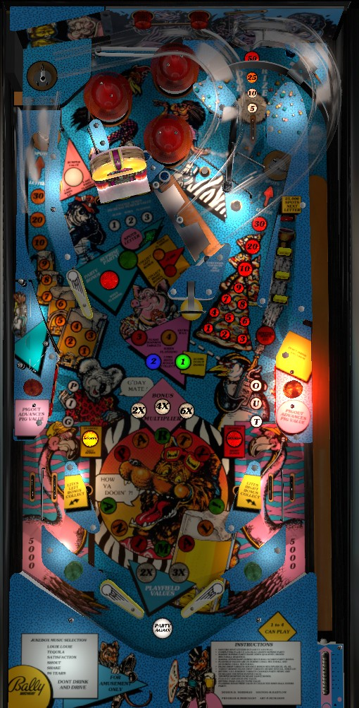

Shoot the upper right saucer, upper left saucer, and upper ramp to earn red, yellow, and green letters in Party Animal! respectively. The standup target behind the inline drops on the right can also spot any letter. Completing Party Animal! qualifies 3-ball multiball at the upper ramp. In multiball, scoring is multiplied by the number of balls in play and the upper ramp scores a one-time jackpot. Completing the Jukebox targets advances the bumper value and changes the music. Completing Pig-Out at the lower sides lights the Toadstool in the center for a progressive award, eventually including an extra ball.
The below picture of Party Animal's playfield was taken from the VPX recreation by Armyaviation.
Any plunge on Party Animal ends up in the game's single top lane, which has a constantly rotating lit value of either 5,000, 10,000, 25,000, or 50,000 points. The award that's lit when the ball rolls through the lane is what you get. This roving value is always available, so you'll also get a Door Prize award when you shoot the lower ramp or when plunging balls to start multiball.
The 12 letters in Party Animal! (including the exclamation mark as a letter) are shown in a circle near the slingshots. Lighting all 12 letters qualifies multiball.
The P, Y, I, and third A are red; light these letters by making the upper right saucer. These are the easiest to get, since any ball that goes through the Door Prize top lane will end up in the upper right saucer.
The first A, T, N, and L are yellow; light these letters by making the upper left saucer.
The R, second A, M, and ! are green; light these letters by making the upper ramp. To reach the upper flipper for a shot at the upper ramp, make either upper saucer; the yellow saucer on the left always feed the upper flipper, while the red saucer on the right only feeds the upper flipper if the ball exits the pop bumpers to the left.
The standup target behind the inline drop targets on the right can spot any letter in Party Animal! (and scores 25,000 points).
Depending on game settings, Party Animal! letters can either be specific to each player; carry over from player to player, but reset at the start of each new game; or carry over from player to player AND game to game.
When Party Animal! is spelled, the upper ramp is lit green for Surprise Party. Making this ramp will feed a second ball to the shooter lane, which can score a Door Prize and will immediately be locked in the upper right saucer. When the second ball is locked, a third ball is immediately fed to the shooter lane, and plunging this ball releases both locks, starting 3-ball multiball. During multiball, all scoring is 2x with 2 balls in play or 3x with 3 balls in play. The only exception is the Party Bonus, which is this game's jackpot. Party Bonus can be collected once per multiball at the upper ramp. The Party Bonus starts at 250,000 points, increases by 1,000 for every switch hit during multiball, maxes at 1,000,000 points, has its value carry over across players and games, and resets when collected.
In addition, hitting the standup target at the end of the inline drops lane on the right scores a Special once per multiball. The inline drop targets never reset mid-ball, so if you've already knocked down all three, a Special is only one shot away during multiball.
There is no ball save or quick restart for multiball, meaning it can be very short, but it's also immensely valuable compared to the rest of the game.
Party Animal has two flavors of end of ball bonus: Left (yellow) and Right (red). Making an upper saucer, in lane, or flashing Pig-Out target advances the bonus on that side of the table only. Making either ramp, hitting the Toadstool, completing the Jukebox targets, or making any target in the right lane advances both bonuses. Normally, only one bonus can be collected at the end of each ball. The selected end of ball bonus is noted with the yellow and red inserts just above the slingshots labelled Outhole Scores Left/Right Bonus. Making the left in lane at any time will switch the currently selected outhole bonus to the left, and also lights the lower ramp for a Left Bonus Collect for about 20 seconds (this length of time can be adjusted). The right in lane switches the outhole bonus to the right, and lights the lower ramp for Right Bonus Collect. The second Toadstool award, described in more detail below, lights the lower ramp to collect both bonuses and ensures that both bonuses are collected at the end of that ball.
Bonus multipliers are earned by hitting the inline drop targets in the right lane. The three inline drop targets advance the bonus multiplier to 2x, then 4x, then 6x. Bonus collects from the lower ramp ignore bonus multiplier; the multiplier is only applied to the end of ball bonus in the out hole. Both base bonuses are always preserved from ball to ball whether they are collected or not, but bonus multipliers always reset.
The targets on the Jukebox labelled 1-2-3 score 5,000 points when unlit or lit. Hit an unlit target to light it solidly. Light all 3 targets to reset them, change the current background music, and advance the bumper value. The indicator light just left the Jukebox describes the bumper value; 1,000 when not lit, 2,000 when lit (after one Jukebox completion), or 3,000 when flashing (after two Jukebox completions).
Pop bumpers also advance the Dance Bonus. The Dance Bonus starts at 5,000 points. Each hit to a pop bumper adds 100, 1,000, or 3,000 to the Dance Bonus depending on whether the indicator light is unlit, lit, or flashing. There is no meaningful limit to the Dance Bonus; testing has determined that it can exceed 2,000,000 points, but it's usually not very likely to exceed 500,000 even in a long game with very active bumpers. The Dance Bonus can only be scored as Pig-Out award #1, described in the next paragraph. Game settings determine whether the Dance Bonus resets when collected; if not, its value will build over the whole game. Each player in a multiplayer game has their own Dance Bonus.
Hit a flashing Pig or Out target in the lower left and right of the game to light it solidly. Flashing targets score 3,000 points and advance that side's bonus; solidly lit targets score 2,000 points. The second flipper buttons on the left and right sides of the cabinet serve as a 'lane change' for the Pig and Out targets respectively, rotating which targets are lit or flashing within the bank. Completing Pig-Out causes the next Toadstool award to flash. Hit the Toadstool in the center of the playfield to collect all flashing awards at once. When all 4 have been collected, they will all unlight so they can be collected again. In order, the awards are:
On easy settings, awards 3 and 4 are tied together, so they are always both qualified and collected at the same time.
Party Animal has a conventional in/out lane setup. All in/out lanes score 5,000 points and advance their side's bonus (left or right). Making the left or right in lane will select the left or right bonus, respectively, as well; only the selected bonus is collected at the end of the ball.
Max bonus is 828,000 points, which is achieved by hitting all three inline drop targets to earn 6x bonus, advancing both bonuses to their maximum of 69,000, and earning Pig-Out award #2 to allow both bonuses to be collected at the end of the ball. For more information on building and collecting the left and right bonuses, see the 'Twin bonuses' section above.
Special can award nothing, points, an extra ball, or a free game. I have not tested the exact value of the points option, but would expect it to be somewhere around 100,000.
Party Animal! letters can be set to one of three options: 1) each player starts from scratch at the beginning of the game and has their own individual letters; 2) no letters are lit at the start of the game, but letters carry over from player to player; or 3) letters are a true carryover award, persisting across balls, players, and games.
Lit Pig-Out targets and flashing or lit Toadstool awards can each independently be reset after each ball.
The Dance Bonus can be reset to 5,000 points when collected. By default, it does not reset.
Extra Ball can be qualified alongside Flash Jukebox Targets as the 3rd Toadstool award, or it can be a separate 4th Toadstool award.
The amount of time that the lower ramp is lit for a bonus collect after making an in lane can be set to 5, 10, 15, or 20 seconds. 20 is the default.